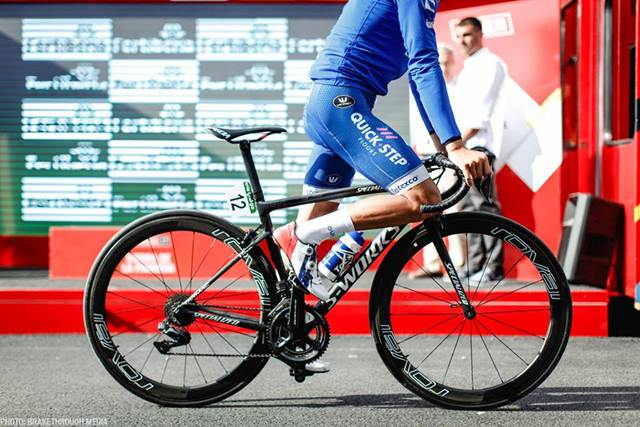

Día Mundial de la BIcicleta
Bicicleta..

Lo que sí está claro es que la bicicleta es el resultado de la evolución de un juguete,La primera bicicleta, fabricada con madera, se llamaba draisina porque la inventó Karl Drais en 1817. .
Es evidente que la bicicleta se convierte cada vez más en un medio de transporte viable para las ciudades que buscan ser sostenibles y que quieren motivar a sus habitantes a utilizar medios de transporte alternativo amigables con el medio ambiente. El uso de la bicicleta es sin duda una estupenda opción que contribuye al ahorro, combate la contaminación y el tráfico.
Bicicletas de Montaña (MTB) ... Bicicletas de Ruta. ... Bicicletas Híbridas. ... Bicicletas Urbanas. ... Bicicletas plegables. ... Fixies y single speed. ... Cruisers. ... MBX.

1-Specialized
2-Scott

3-Trek

4-Giant

5-Canyon